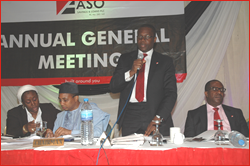
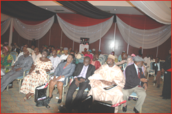
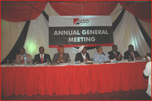
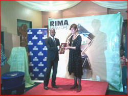
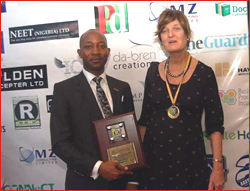
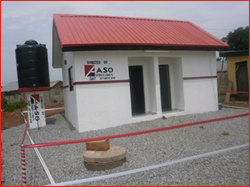
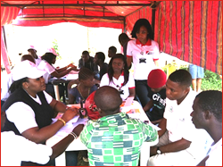
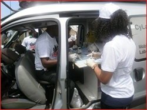
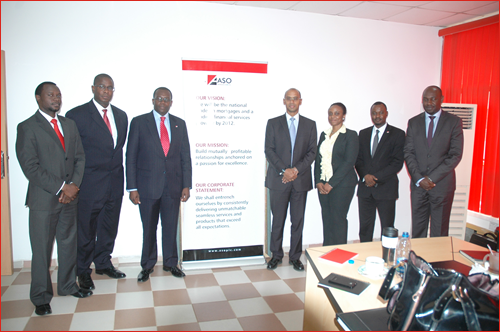
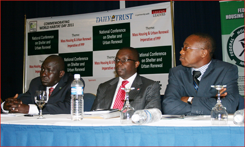

2011
Click to expand/collapse
-
ASO Holds 12th & 13th AGM in Abuja November 30, 2011
-
  Hassan Usman (ASO MD) clearing shareholder's doubts. ASO shareholders impressed over profit made in the year ended 2011. Bilkisu Rimi (Company Secretary) reading out the notice of the 12th & 13th AGM. L-R: Hassan Usman (ASO MD), Abdu Muktar (Chairman of the Board) and Collins Chikeluba (Board Director) after the 12th & 13th Annual General Meeting.  Members of the Board of ASO during the 12th & 13th AGM. Shareholders ackowledge banks performance.
-
-
ASO Receives RIMA Awards November 10, 2011
-
Recently, our Record Management Project, Archives, championed by Ramalan Suleiman (Internal Control unit), won an award at the last Record and Information Management (RIMA) event which took place in Lagos recently. Pictures from the event are below.
  Ramalan Suleiman and Dr Anne Thuston OBE, International Director of International Record Management Trust (London)at the event. Ramalan Suleiman posing for a picture with Dr Anne Thuston OBE after the event in Lagos.
-
-
ASO Management pays courtesy visit to Oba of Benin & Edo State October 19, 2011
-
As part of efforts to better position Benin Branch for higher patronage and recognition in Edo State, the ASO Management Team, led by the Managing Director, Hassan Usman, paid a courtesy visit to Oba Erediawa of Benin.
This was subsequently followed by another courtesy visit to the Executive Governor of the State, Comrade Adams Oshiomhole.
Oba Erediawa and the ASO Management Staff. Comrade Adams Oshiomole with ASO MD and Management Team.
-
-
ASO donates school toilet to LEA Primary School, Kabusa October 19, 2011
-
In keeping to the tenets of Corporate Social Responsibility (CSR ) ASO Savings & Loans PLC recently constructed and donated a school toilet to LEA Primary School, Kabusa.
 GH Northern Region, Ibrahim Admau (middle) with ASO Staff pupils & Staff of LEA Primary School, Kabusa. School toilet constructed & donated by ASO Savings & Loans PLC.
-
-
ASO sponsors HIV & Malaria Campaign October 19, 2011
-
ASO in collaboration with Silver Lining for the needy initiative (SLNI), organized a HIV & Malaria Campaign at a Village in Mpape, Abuja, recently.
 Mohammed Shehu (Executive Director Operations & Technology ASO Savings & Loans PLC) distributing mosquito nets to one of the many participants at the campaign. Counselor from SLNI counseling participants & ASO Staff prior to their HIV testing.  Participants queuing up to ascertain their HIV Status. HIV testing in progress at the onsite lab.
-
-
IFC meets with top Management Team of ASO Savings & Loans PLC October 19, 2011
-
AIDC & ASO Collaborates with Abia State Government on Housing Development August 8, 2012
-
 L-R: Mohammed Shehu (Executive Director Operations & Technology ASO Savings & Loans PLC), Solomon Adegbie (Country Manager Africa Department, IFC), Hassan Usman (Managing Director, ASO Savings & Loans PLC), Thierry Tanoh (Vice President, Sub-Saharan Africa, Latin America and the Caribbean Region and Western Europe), Isimkah Ibuakah (Legal Adviser Nigeria Corporate Governance Programme, IFC), Gattah Woji (Head Treasury ASO Savings & Loans PLC), Nagada Arhyel (Special Assistant to the ASO MD)
-
-
MD of ASO Savings & Loans PLC Advocates Incentives For PMIs October 6, 2011
-
The MD of ASO Savings & Loans PLC Mr. Hassan Usman has stated that although the Nigerian economy has grown from $46BN to $247bn in the last ten years, considerable impact is still yet to be made to improve housing delivery in the country. He made this known at a conference on Shelter and Urban Renewal, held recently to commemorate the World Habitat Day.
According to him, less than 30,000 housing units are developed every year as against the annual demand of between 500,000 to 1,000,000 by Nigerians. He added that the absence of viable quality mass housing developers and the reluctance of Banks to fund residential real estate among other factors, contributes largely to this challenge.
Enumerating on incentives that are needed to boost the Housing Sector, Mr. Hassan said access to inexpensive lands, 5 year Tax holiday for Mass Housing developers, Mortgage Interest Relief and the creation of a N250BN origination fund will go a long way. He advocated that allowing PMIs access to CBN discount window and the foreign exchange market would encourage better mortgage creation. Added to this, allowing investments by PMIs and Banks in mortgage assets and mortgage backed securities to count as part of their liquidity reserve requirements whilst allowing recapitalized PMIs to go to clearing House were noted by the MD as potential spurs to further the provision of mortgages.
Mr. Hassan concluded that to reduce the current Housing crisis in Nigeria, a critical intervention is required to increase Housing Finance from 1% to 5% of GDP within the next 5 years.

-
-
ASO sponsors Emir of Kano Golf Tournament September 8, 2011
-
As part of efforts aimed at promoting and supporting the game of golf in Nigeria, ASO Savings & Loans PLC in collaboration with the Nigeria Professional Golf Association sponsored the Third Emir of Kano Golf tournament, held at the Kano Golf Club.
The six-day tournament which featured two cadres – professional and amateur, attracted some of the best golfers from across the nation.
The management of the bank was represented by the Executive Director Operations & Technology, Shehu Inuwa Mohammed. Speaking at the closing ceremony, Mr. Mohammed said ASO was desirous of supporting the growth of golf in the country, in view of the ever-rising popularity of the game globally, of which he said Nigeria must not be left out.
The event was graced by the Executive Governor of Kano, Dr Rabiu Musa Kwankwaso, and the Turakin Kano, Alhaji Nasir Ado Bayero, who represented the Emir. Prizes were given to deserving winners at the end of the tournament.
-
-
ASO Donates Educational Materials To LEA School Garki June 14, 2011
-
In furtherance of its unwavering commitment towards supporting education for all, the management and staff of ASO Savings & Loans PLC donated school materials to LEA School Garki-Abuja, as part of its BACK-TO-SCHOOL-DRIVE campaign.
Led by the Executive Director Finance, Peter Longe, the ASO team donated materials such as pencils, erasers, math sets, rulers etc. At the presentation ceremony, Mr. Longe said that ASO was committed to alleviating the living standards of the less-privileged members of society, especially indigent students. This he said the donation would help in bringing the benefits of development to communities that are in dire need. He urged the students to be diligent and focused, as that was the only way they could become meaningful members of society.
The Assistant Head Teacher (I) of LEA School, Mrs. Elizabeth Arogundade thanked the management of ASO for assisting the school with the donation, noting that a well-grounded educational foundation would go a long in positioning the students for future leadership roles. She promised that the materials would be put to judicious use for the benefit of the students.
The Back to School Drive is a corporate social responsibility of ASO Savings & Loans PLC which started in 2005. The objective is to assist children and wards of low income earners through basic education.
By this, ASO is reaffirming its firm commitment to becoming a leadingfinancial services provider by 2012 by building mutually profitable relationship anchored on excellence, while maximizing the impact and value of education towards economic development.
Photo shots from the ASO BACK-TO-SCHOOL-DRIVE visit to LEA School Garki-Abuja on June 8th, 2011.
-
-
MD ASO Savings & Loans Honoured at ThisDay Awards 2011 March, 2011
-
It was a day of celebration at the 16th Thisday Awards ceremony held in Lagos, as the Managing Director & Chief Executive Officer of ASO Savings & Loans PLC, Mr. Hassan Usman bagged the prestigious 2011 Young Global Champions Award for Transforming a Savings & Loans Entity.
This is in recognition of his efforts at not only re-positioning ASO Savings & Loans PLC but also for putting the bank on the path to becoming one of Nigeria's Leading Financial Institutions.
Mr. Hassan, who was accompanied to the ceremony by top management staff from the bank, was presented with his award by the former governor of the state of California and renowned Hollywood actor, Arnold Schwarzenegger. Also present at the award ceremony was the former President of the United States of America, Bill Clinton.
Over 50 Nigerians received awards for excellence in governance, and institutional development.
-
-
ASO Savings host 1st Housing Exhibition March 17-18, 2011
-
It was a day of celebration at the 16th Thisday Awards ceremony held in Lagos, as the Managing Director & Chief Executive Officer of ASO Savings & Loans PLC, Mr. Hassan Usman bagged the prestigious 2011 Young Global Champions Award for Transforming a Savings & Loans Entity.
This is in recognition of his efforts at not only re-positioning ASO Savings & Loans PLC but also for putting the bank on the path to becoming one of Nigeria's Leading Financial Institutions.
Mr. Hassan, who was accompanied to the ceremony by top management staff from the bank, was presented with his award by the former governor of the state of California and renowned Hollywood actor, Arnold Schwarzenegger. Also present at the award ceremony was the former President of the United States of America, Bill Clinton.
Over 50 Nigerians received awards for excellence in governance, and institutional development.
-
-
ASO Emerges Number One Mortgage Institution in Nigeria January 3, 2011
-
Our drive towards becoming the national leader in mortgages has materialized, as ASO Savings & Loans PLC emerged winner of the prestigious "Sectoral Leadership Award for Mortgage Companies in Nigeria" on November 29th 2010.
The event was held at The Oriental Hotel, Victoria Island Lagos.
This award bestowed on ASO, is in recognition of our outstanding operational and stock market performance in the 2009 assessment.
The Executive Director, Operations & Technology, Shehu Inuwa Mohammed, and Chief Financial Officer, Peter Longe, collected the award on behalf of The Management and Staff of ASO Savings & Loans PLC.
The awards ceremony is an annual event, organized by The Pearl Awards Project Secretariat for Companies quoted on the Floor of The Nigerian Stock Exchange.
-